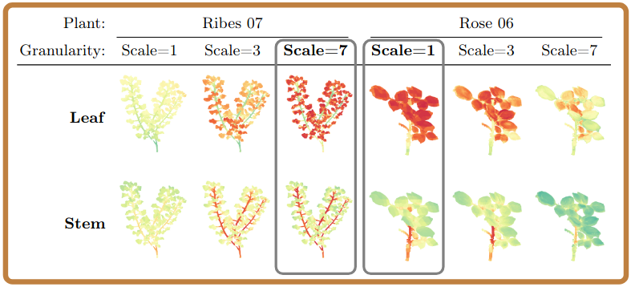
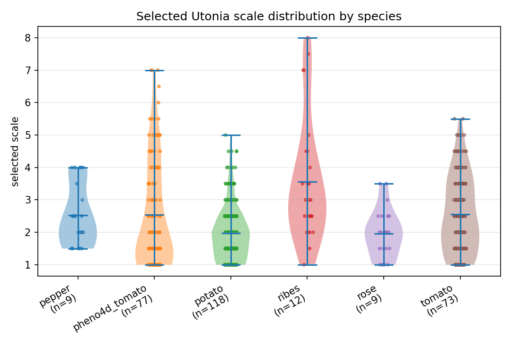
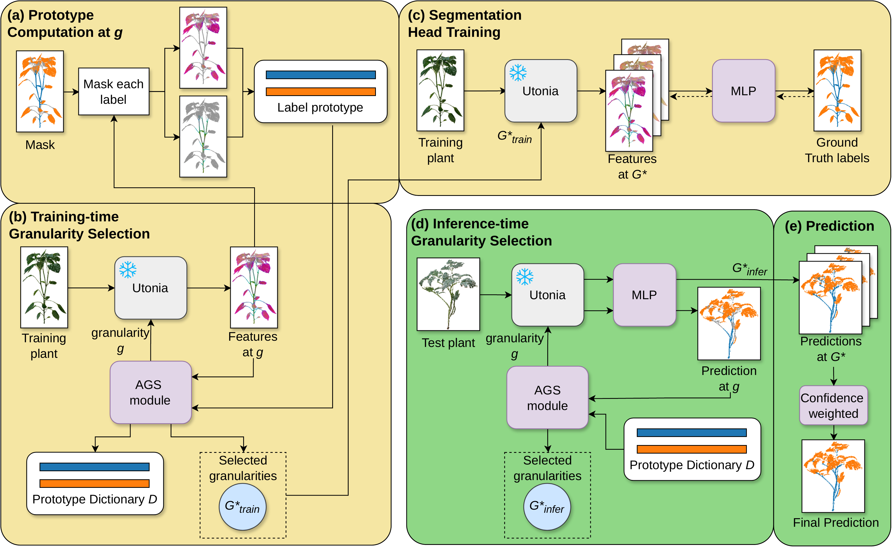
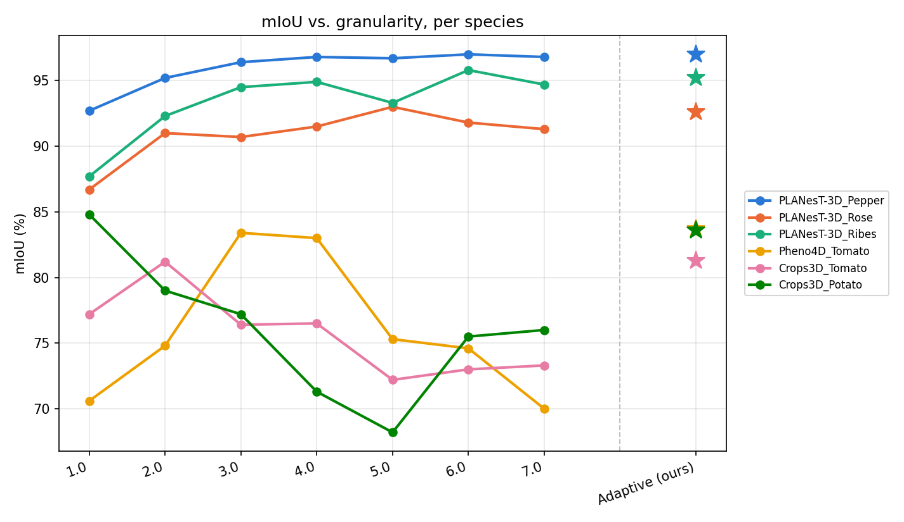

We introduce AGS-PlantSeg, a few-shot 3D plant organ segmentation method built on a frozen Utonia encoder with a lightweight two-layer MLP head. Rather than committing to a single fixed granularity, our Adaptive Granularity Selection (AGS) module adapts the representation to each plant. During training, AGS selects three granularity levels using prototype-based measures of inter-class separation, intra-class compactness, and class-wise boundary consistency: one level maximizes class discriminability, while two class-specific levels capture boundary consistency. At inference, it selects three levels based on similarity to stored training prototypes and combines their predictions through confidence-weighted aggregation. Trained only on PLANesT-3D and evaluated for cross-species, cross-dataset generalization on Pheno4D and Crops3D, AGS-PlantSeg reaches 88.9% average mIoU, outperforming the best fixed-granularity baseline (86.4%) by 2.5 mIoU.
A single fixed spatial granularity rarely suits every plant. AGS-PlantSeg adapts granularity per plant instead, trained only on PLANesT-3D and evaluated for cross-species, cross-dataset generalization on Pheno4D and Crops3D.


AGS selects granularity levels using label prototypes, both when training the segmentation head and at inference on unseen plants.

Adaptive granularity selection outperforms every fixed-granularity choice, and the granularity it picks varies by species.

Qualitative results on unseen cross-species datasets, not used during training. Drag each comparison to reveal RGB, PCA features, or the predicted segmentation against ground truth.
If you find this work useful, please cite: